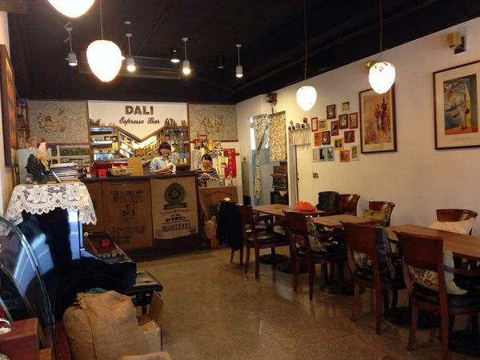
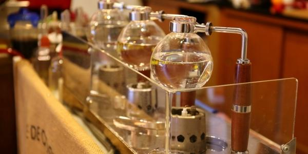

達利自家烘焙咖啡館


這是小編的愛店, 老闆曾經在我大學時期的咖啡社擔任過老師, 他對於沖咖啡有很多自己的理論和見解, 小編每次回來新竹可是都會前來拜訪呢!! 老闆原本在營建業, 網路業工作, 後來因為對咖啡有興趣,就業8年後先兼職賣行動咖啡，1年後開設店面，自學烘焙咖啡豆、做點心, 店內許多甜點都是老闆親自手做的唷~ 特別是布列塔尼酥餅, 小編超級愛裏頭的奶香呢!! 老闆的沖煮手法十分特別, 使用的是二次賽風萃取, 所以每杯咖啡的後韻都非常強烈, 雖然每杯都不便宜, 但能喝到如此好喝的咖啡也值得囉~ 店內的有很多西班牙畫家達利的擺飾, 因為老闆娘生前很愛達利, 店名也是這樣誕生的唷~ 有機會到竹北, 一定要來這家店瞧瞧!! 老闆為了咖啡豆品質, 烘豆機也都封頂了呢!!